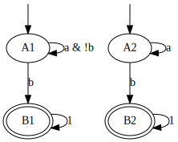

ltlcross
Table of Contents
ltlcross is a tool for cross-comparing the output of LTL-to-automata
translators. It is actually a Spot-based clone of LBTT, the
LTL-to-Büchi Translator Testbench, that essentially performs the
same sanity checks.
The main differences with LBTT are:
- support for PSL formulas in addition to LTL
- support for (non-alternating) automata with any type of acceptance condition,
- support for weak alternating automata,
- additional intersection checks with the complement, allowing to check equivalence of automata more precisely,
- more statistics, especially:
- the number of logical transitions represented by each physical edge,
- the number of deterministic states and automata
- the number of SCCs with their various strengths (nonaccepting, terminal, weak, strong)
- the number of terminal, weak, and strong automata
- an option to reduce counterexample by attempting to mutate and shorten troublesome formulas,
- statistics output in CSV for easier post-processing,
- more precise time measurement (LBTT was only precise to 1/100 of a second, reporting most times as "0.00s").
Although ltlcross performs the same sanity checks as LBTT, it does
not implement any of the interactive features of LBTT. In our almost
10-year usage of LBTT, we never had to use its interactive features to
understand bugs in our translation. Therefore ltlcross will report
problems, maybe with a conterexample, but you will be on your own to
investigate and fix them.
The core of ltlcross is a loop that does the following steps:
- Input a formula
- Translate the formula and its negation using each configured translator.
If there are 3 translators, the positive and negative translations
will be denoted
P0,N0,P1,N1,P2,N2. Optionally build complemented automata denotedComp(P0),Comp(N0), etc. - Perform sanity checks between all these automata to detect any problem.
- Build the products of these automata with a random state-space (the same
state-space for all translations). (If the
--products=Noption is given,Nproducts are performed instead.) - Gather statistics if requested.
Formula selection
Formulas to translate should be specified using the common input
options. Standard input is read if it is not connected to a terminal,
and no -f or -F options are given.
Configuring translators
Translator specifications
Each translator should be specified as a string that use some of the following character sequences:
%% a single %
%f,%s,%l,%w the formula as a (quoted) string in Spot, Spin,
LBT, or Wring's syntax
%F,%S,%L,%W the formula as a file in Spot, Spin, LBT, or
Wring's syntax
%O the automaton output in HOA, never claim, LBTT, or
ltl2dstar's format
For instance here is how we could cross-compare the never claims
output by spin and ltl2tgba for the formulas GFa and X(a U b).
ltlcross -f 'GFa' -f 'X(a U b)' 'ltl2tgba -s %s >%O' 'spin -f %s >%O'
When ltlcross executes these commands, %s will be replaced
by the formula in Spin's syntax, and %O will be replaced by a
temporary file into which the output of the translator is redirected
before it is read back by ltlcross.
[](<>(a)) Running [P0]: ltl2tgba -s '[](<>(a))' >'lcr-o0-vC9D7N' Running [P1]: spin -f '[](<>(a))' >'lcr-o1-jFh5rq' Running [N0]: ltl2tgba -s '!([](<>(a)))' >'lcr-o0-xbVIM2' Running [N1]: spin -f '!([](<>(a)))' >'lcr-o1-4AWn9E' Performing sanity checks and gathering statistics... X((a) U (b)) Running [P0]: ltl2tgba -s 'X((a) U (b))' >'lcr-o0-xLa8wh' Running [P1]: spin -f 'X((a) U (b))' >'lcr-o1-cuYVWT' Running [N0]: ltl2tgba -s '!(X((a) U (b)))' >'lcr-o0-GVZWmw' Running [N1]: spin -f '!(X((a) U (b)))' >'lcr-o1-QBGWO8' Performing sanity checks and gathering statistics... No problem detected.
To handle tools that do not support some LTL operators, the character
sequences %f, %s, %l, %w, %F, %S, %L, and %W can be
"infixed" by a bracketed list of operators to rewrite away. For
instance if a tool reads LTL formulas from a file in LBT's syntax, but
does not support operators M (strong until) and W (weak until),
use %[WM]L instead of just %L; this way operators W and M will
be rewritten using the other supported operators.
ltlcross can only read four kinds of output:
- Never claims (only if they are restricted to representing an
automaton using
if,goto, andskipstatements) such as those output byspin,ltl2ba,ltl3ba, orltl2tgba --spin. The newer syntax introduced by Spin 6.24, usingdoinstead ofif, is also supported. - LBTT's format, which supports generalized Büchi automata with
either state-based acceptance or transition-based acceptance.
This output is used for instance by
lbt,modella, orltl2tgba --lbtt. - Non-alternating automata in the HOA format with any acceptance condition.
- Weak alternating automata in the HOA format.
ltl2dstar's format, which supports deterministic Rabin or Streett automata.
Files in any of these format should be indicated with %O. (Past
versions of ltlcross used different letters for each format, but the
four parsers have been merged into a single one.)
Of course all configured tools need not use the same % sequences.
The following list shows some typical configurations for some existing
tools:
- '
spin -f %s >%O' - '
ltl2ba -f %s >%O' - '
ltl3ba -M0 -f %s >%O' (less deterministic output, can be smaller) - '
ltl3ba -M1 -f %s >%O' (more deterministic output) - '
modella -r12 -g -e %[MWei^]L %O' - '
/path/to/script4lbtt.py %L %O' (script supplied by ltl2nba for its interface with LBTT) - '
ltl2tgba -s %f >%O' (smaller output, Büchi automaton) - '
ltl2tgba -s -D %f >%O' (more deterministic output, Büchi automaton) - '
ltl2tgba -H %f >%O' (smaller output, TGBA) - '
ltl2tgba -H -D %f >%O' (more deterministic output, TGBA) - '
lbt <%L >%O' - '
ltl2dstar --ltl2nba=spin:path/to/ltl2tgba@-sD --output-format=hoa %[MW]L %O' deterministic Rabin output in HOA, as supported since version 0.5.2 ofltl2dstar. - '
ltl2dstar --ltl2nba=spin:path/to/ltl2tgba@-sD --automata=streett --output-format=hoa %[MW]L %O' deterministic Streett output in HOA, as supported since version 0.5.2 ofltl2dstar. - '
ltl2dstar --ltl2nba=spin:path/to/ltl2tgba@-sD %[MW]L %O' (Rabin output in DSTAR format, as supported in older versions ofltl2dstar. - '
ltl2dstar --ltl2nba=spin:path/to/ltl2tgba@-sD %L - | dstar2tgba -s >%O' (external conversion from Rabin to Büchi done bydstar2tgbafor more reduction of the Büchi automaton than whatltlcrosswould provide) - '
java -jar Rabinizer.jar -ltl2dstar %[MW]F %O; mv %O.dst %O' (Rabinizer uses the last%Oargument as a prefix to which it always append.dst, so we have to rename%O.dstas%Oso thatltlcrosscan find the file) - '
java -jar rabinizer3.1.jar -in=formula -silent -out=std -format=hoa -auto=tr %[MWRei^]f >%O' (rabinizer 3.1 can output automata in the HOA format) - '
ltl3dra -f %s >%O' (The HOA format is the default forltl3dra.) - '
ltl3tela -f %s >%O' (The HOA format is the default forltl3tela.)
To simplify the use of some of the above tools, a set of predefined
shorthands are available. Those can be listed with the
--list-shorthands option.
ltlcross --list-shorthands
If a COMMANDFMT does not use any %-sequence, and starts with one of
the following words, then the string on the right is appended.
lbt <%L>%O
ltl2ba -f %s>%O
ltl2da %f>%O
ltl2dpa %f>%O
ltl2ldba %f>%O
ltl2dstar --output-format=hoa %[MW]L %O
ltl2tgba -H %f>%O
ltl3ba -f %s>%O
ltl3dra -f %s>%O
ltl3hoa -f %f>%O
ltl3tela -f %f>%O
modella %[MWei^]L %O
spin -f %s>%O
Any {name} and directory component is skipped for the purpose of
matching those prefixes. So for instance
'{DRA} ~/mytools/ltl2dstar-0.5.2'
will be changed into
'{DRA} ~/mytools/ltl2dstar-0.5.2 --output-format=hoa %[MW]L %O'
What this implies is that running ltlcross ltl2ba ltl3ba ... is
the same as running ltlcross 'ltl2ba -f %s>%O' 'ltl3ba -f %s>%O' ...
Because only the prefix of the actual command is checked, you can
still specify some options. For instance ltlcross 'ltl2tgba -D' ...
is short for ltlcross 'ltl2tgba -D -H %F>%O' ...
Trusted and untrusted translators
By default, all translators specified are not trusted. This means
that ltlcross will cross-compare the output of all translators,
possibly yielding a quadratic number of tests.
It is possible to declare that certain translators should be trusted
by specifying them with the --reference=COMMANDFMT option. This has
a few implications:
- the automata output by reference translators are not tested
- a pair of positive and negative reference automata are selected from the reference translators (the smallest automata, in case multiple references are available), and all other translators will only be compared to these reference automata.
Consequently, the number of test performed is now linear in the number
of untrusted references. The easiest way to observe the effect of
--reference is to run the ltlcross with the --verbose option,
with and without some --reference translators.
Getting statistics
Detailed statistics about the result of each translation, and the
product of that resulting automaton with the random state-space, can
be obtained using the --csv=FILE or --json=FILE option.
CSV or JSON output (or both!)
The following compare ltl2tgba, spin, and lbt on three random
formulas (where W and M operators have been rewritten away because
they are not supported by spin and lbt).
randltl -n 3 a b | ltlfilt --remove-wm | ltlcross --csv=results.csv \ 'ltl2tgba -s %f >%O' \ 'spin -f %s >%O' \ 'lbt < %L >%O'
After this execution, the file results.csv contains the following:
"formula","tool","exit_status","exit_code","time","states","edges","transitions","acc","scc","nondet_states","nondet_aut","complete_aut","product_states","product_transitions","product_scc" "0","ltl2tgba -s %f >%O","ok",0,0.0118255,1,1,0,1,1,0,0,0,1,0,1 "0","spin -f %s >%O","ok",0,0.000940633,2,2,1,1,2,0,0,0,1,0,1 "0","lbt < %L >%O","exit code",2,0.00103297,,,,,,,,,,, "1","ltl2tgba -s %f >%O","ok",0,0.0107316,1,1,1,1,1,0,0,1,200,4199,1 "1","spin -f %s >%O","ok",0,0.00085299,2,2,2,1,2,0,0,1,201,4220,2 "1","lbt < %L >%O","exit code",2,0.000888048,,,,,,,,,,, "!((1) U (F(!(p0))))","ltl2tgba -s %f >%O","ok",0,0.0107568,1,1,1,1,1,0,0,0,200,2059,1 "!((1) U (F(!(p0))))","spin -f %s >%O","ok",0,0.000893701,1,1,1,1,1,0,0,0,200,2059,1 "!((1) U (F(!(p0))))","lbt < %L >%O","exit code",2,0.00105079,,,,,,,,,,, "(1) U (F(!(p0)))","ltl2tgba -s %f >%O","ok",0,0.010926,2,3,4,1,2,0,0,1,400,8264,2 "(1) U (F(!(p0)))","spin -f %s >%O","ok",0,0.000946616,2,3,5,1,2,1,1,1,400,10337,2 "(1) U (F(!(p0)))","lbt < %L >%O","exit code",2,0.00111029,,,,,,,,,,, "(1) U ((G(p0)) | (F(p1)))","ltl2tgba -s %f >%O","ok",0,0.0118564,3,5,11,1,3,1,1,0,600,11358,3 "(1) U ((G(p0)) | (F(p1)))","spin -f %s >%O","ok",0,0.00103259,4,8,24,1,4,2,1,0,800,24920,4 "(1) U ((G(p0)) | (F(p1)))","lbt < %L >%O","exit code",2,0.00118567,,,,,,,,,,, "!((1) U ((G(p0)) | (F(p1))))","ltl2tgba -s %f >%O","ok",0,0.0109786,2,4,4,1,1,0,0,0,395,3964,1 "!((1) U ((G(p0)) | (F(p1))))","spin -f %s >%O","ok",0,0.00325304,6,18,17,1,4,5,1,0,592,8891,1 "!((1) U ((G(p0)) | (F(p1))))","lbt < %L >%O","exit code",2,0.00111555,,,,,,,,,,,
This file can be loaded in any spreadsheet or statistical application.
Although we only supplied 2 random generated formulas, the output
contains 4 formulas because ltlcross had to translate the positive
and negative version of each.
If we had used the option --json=results.json instead of (or in
addition to) --cvs=results.csv, the file results.json would have
contained the following JSON output.
{
"tool": [
"ltl2tgba -s %f >%O",
"spin -f %s >%O",
"lbt < %L >%O"
],
"formula": [
"0",
"1",
"!((1) U (F(!(p0))))",
"(1) U (F(!(p0)))",
"(1) U ((G(p0)) | (F(p1)))",
"!((1) U ((G(p0)) | (F(p1))))"
],
"fields": [
"formula","tool","exit_status","exit_code","time","states","edges","transitions","acc","scc","nondet_states","nondet_aut","complete_aut","product_states","product_transitions","product_scc"
],
"inputs": [ 0, 1 ],
"results": [
[ 0,0,"ok",0,0.0118255,1,1,0,1,1,0,0,0,1,0,1 ],
[ 0,1,"ok",0,0.000940633,2,2,1,1,2,0,0,0,1,0,1 ],
[ 0,2,"exit code",2,0.00103297,null,null,null,null,null,null,null,null,null,null,null ],
[ 1,0,"ok",0,0.0107316,1,1,1,1,1,0,0,1,200,4199,1 ],
[ 1,1,"ok",0,0.00085299,2,2,2,1,2,0,0,1,201,4220,2 ],
[ 1,2,"exit code",2,0.000888048,null,null,null,null,null,null,null,null,null,null,null ],
[ 2,0,"ok",0,0.0107568,1,1,1,1,1,0,0,0,200,2059,1 ],
[ 2,1,"ok",0,0.000893701,1,1,1,1,1,0,0,0,200,2059,1 ],
[ 2,2,"exit code",2,0.00105079,null,null,null,null,null,null,null,null,null,null,null ],
[ 3,0,"ok",0,0.010926,2,3,4,1,2,0,0,1,400,8264,2 ],
[ 3,1,"ok",0,0.000946616,2,3,5,1,2,1,1,1,400,10337,2 ],
[ 3,2,"exit code",2,0.00111029,null,null,null,null,null,null,null,null,null,null,null ],
[ 4,0,"ok",0,0.0118564,3,5,11,1,3,1,1,0,600,11358,3 ],
[ 4,1,"ok",0,0.00103259,4,8,24,1,4,2,1,0,800,24920,4 ],
[ 4,2,"exit code",2,0.00118567,null,null,null,null,null,null,null,null,null,null,null ],
[ 5,0,"ok",0,0.0109786,2,4,4,1,1,0,0,0,395,3964,1 ],
[ 5,1,"ok",0,0.00325304,6,18,17,1,4,5,1,0,592,8891,1 ],
[ 5,2,"exit code",2,0.00111555,null,null,null,null,null,null,null,null,null,null,null ]
]
}
Here the fields table describes the columns of the results table.
The inputs tables lists the columns that are considered as inputs
for the experiments. The values in the columns corresponding to the
fields formula and tool contains indices relative to the formula
and tool tables. This format is more compact when dealing with lots
of translators and formulas, because they don't have to be repeated on
each line as in the CSV version.
JSON data can be easily processed in any language. For instance the
following Python3 script averages each column (except the first four)
for each tool, and presents the results in a form that can almost be
copied into a LaTeX table (the % in the tool names have to be taken
care of). Note that for simplicity we assume that the first two
columns are inputs, instead of reading the inputs field.
#!/usr/bin/python3 import json data = json.load(open('results.json')) datacols = range(4, len(data["fields"])) # Index results by tool results = { t:[] for t in range(0, len(data["tool"])) } for l in data["results"]: results[l[1]].append(l) # Average columns for each tool, and display them as a table print("%-18s & count & %s \\\\" % ("tool", " & ".join(data["fields"][4:]))) for i in range(0, len(data["tool"])): c = len(results[i]) sums = ["%6.1f" % (sum([x[j] for x in results[i]])/c) for j in datacols] print("%-18s & %3d & %s \\\\" % (data["tool"][i], c, " & ".join(sums)))
The script bench/ltl2tgba/sum.py is a more evolved version of the
above script that generates two kinds of LaTeX tables.
When computing such statistics, you should be aware that inputs for
which a tool failed to generate an automaton (e.g. it crashed, or it
was killed if you used ltlcross's --timeout option to limit run
time) will appear as mostly empty lines in the CSV or JSON files,
since most statistics cannot be computed without an automaton…
Those lines with missing data can be omitted with the --omit-missing
option (this used to be the default up to Spot 1.2).
However data for bogus automata are still included: as shown below
ltlcross will report inconsistencies between automata as errors, but
it does not try to guess who is incorrect.
Description of the columns
The number of column output in the CSV or JSON outputs depend on the
options passed to ltlcross. Additional columns will be output if
--strength, --ambiguous, --automata, or --product=+N are used.
Columns formula and tool contain the formula translated and the
command run to translate it. In the CSV, these columns contain the
actual text. In the JSON output, these column contains an index into
the formula and tool table declared separately.
exit_status and exit_code are used to indicate if the translator
successfully produced an automaton, or if it failed. On successful
translation, exit_status is equal to "ok" and exit_code is 0.
If the translation took more time than allowed with the --timeout
option, exit_status will contain "timeout" and exit_code will be
set to -1. Other values are used to diagnose various issues: please
check the man-page for ltlcross for a list of them.
time obviously contains the time used by the translation. Time is
measured with some high-resolution clock when available (that's
nanosecond accuracy under Linux), but because translator commands are
executed through a shell, it also includes the time to start a shell.
(This extra cost apply identically to all translators, so it is not unfair.)
All the values that follow will be missing if exit_status is not
equal to "ok". (You may instruct ltlcross not to output lines with
such missing data with the option --omit-missing.)
states, edges, transitions, acc are size measures for the
automaton that was translated. acc counts the number of acceptance
sets. When building (degeneralized) Büchi automata, it will always be
1, so its value is meaningful only when evaluating translations to
generalized Büchi automata. edges counts the actual number of edges
in the graph supporting the automaton; an edge (labeled by a Boolean
formula) might actually represent several transitions (each labeled by
assignment of all atomic propositions). For instance in an automaton
where the atomic proposition are \(a\) and \(b\), one edge labeled by
\(a\lor b\) actually represents three transitions \(a b\), \(a\bar b\), and
\(\bar a b\).
The following picture displays two automata for the LTL formula a U
b. They both have 2 states and 3 edges, however they differ in the
number of transitions (7 versus 8), because the initial self-loop is
more constrained in the first automaton. A smaller number of
transition is therefore an indication of a more constrained automaton.

scc counts the number of strongly-connected components in the automaton.
If option --strength is passed to ltlcross, these SCCs are
also partitioned on four sets based on their strengths:
nonacc_sccfor non-accepting SCCs (such as states A1 and A2 in the previous picture).terminal_sccfor accepting SCCs where all states or edges belong to the same acceptance sets, and that are complete (i.e., any state in a terminal SCC accepts the universal language). States B1 and B2 in the previous picture are two terminal SCCs.weak_sccfor accepting SCCs where all states or edges belong to the same acceptance sets, but that are not complete.strong_sccfor accepting SCCs that are not weak.
These SCC strengths can be used to compute the strength of the automaton as a whole:
- an automaton is terminal if it contains only non-accepting or terminal SCCs,
- an automaton is weak if it it contains only non-accepting, terminal, or weak SCCs,
- an automaton is strong if it contains at least one strong SCC.
This classification is used to fill the terminal_aut, weak_aut,
strong_aut columns with Boolean values (still only if option
--strength is passed). Only one of these should contain 1. We
usually prefer terminal automata over weak automata, and weak automata
over strong automata, because the emptiness check of terminal (and
weak) automata is easier. When working with alternating automata, all
those strength-related columns will be empty, because the routines
used to compute those statistic do not yet support universal edges.
nondetstates counts the number of non-deterministic states in the
automaton. nondeterministic is a Boolean value indicating if the
automaton is not deterministic. For instance in the previous picture
showing two automata for a U b, the first automaton is deterministic
(these two fields will contain 0), while the second automaton contain
a nondeterministic state (state A2 has two possible successors for the
assignment \(ab\)) and is therefore not deterministic.
If option --aumbiguous was passed to ltlcross, the column
ambiguous_aut holds a Boolean indicating whether the automaton is
ambiguous, i.e., if there exists a word that can be accepted by at
least two different runs. (This information is not yet available for
alternating automata.)
complete_aut is a Boolean indicating whether the automaton is
complete.
Columns product_states, product_transitions, and product_scc
count the number of state, transitions and strongly-connect components
in the product that has been built between the translated automaton
and a random model. For a given formula, the same random model is of
course used against the automata translated by all tools. Comparing
the size of these product might give another indication of the
"conciseness" of a translated automaton.
There is of course a certain "luck factor" in the size of the product.
Maybe some translator built a very dumb automaton, with many useless
states, in which just a very tiny part is translated concisely. By
luck, the random model generated might synchronize with this tiny part
only, and ignore the part with all the useless states. A way to
lessen this luck factor is to increase the number of products
performed against the translated automaton. If option --products=N
is used, N products are builds instead of one, and the fields
product_states, product_transitions, and product_scc contain
average values.
If the option --products=+N is used (with a + in front of the
number), then no average value is computed. Instead, three columns
product_states, product_transitions, and product_scc are output
for each individual product (i.e., \(3\times N\) columns are output).
This might be useful if you want to compute different kind of
statistic (e.g., a median instead of a mean) or if you want to build
scatter plots of all these products.
Finally, if the --automata option was passed to ltlcross, the CSV
or JSON output will contain a column named automaton encoding each
produced automaton in the HOA format.
Changing the name of the translators
By default, the names used in the CSV and JSON output to designate the translators are the command specified on the command line.
For instance in the following, ltl2tgba is run in two
configurations, and the strings ltl2tgba -s --small %f >%O and
ltl2tgba -s --deter %f >%O appear verbatim in the output:
ltlcross -f a -f Ga 'ltl2tgba -s --small %f >%O' 'ltl2tgba -s --deter %f >%O' --csv
"formula","tool","exit_status","exit_code","time","states","edges","transitions","acc","scc","nondet_states","nondet_aut","complete_aut","product_states","product_transitions","product_scc" "a","ltl2tgba -s --small %f >%O","ok",0,0.0121034,2,2,3,1,2,0,0,0,201,4144,2 "a","ltl2tgba -s --deter %f >%O","ok",0,0.0103523,2,2,3,1,2,0,0,0,201,4144,2 "!(a)","ltl2tgba -s --small %f >%O","ok",0,0.0107823,2,2,3,1,2,0,0,0,201,4149,2 "!(a)","ltl2tgba -s --deter %f >%O","ok",0,0.011203,2,2,3,1,2,0,0,0,201,4149,2 "G(a)","ltl2tgba -s --small %f >%O","ok",0,0.0116035,1,1,1,1,1,0,0,0,200,2059,1 "G(a)","ltl2tgba -s --deter %f >%O","ok",0,0.0109578,1,1,1,1,1,0,0,0,200,2059,1 "!(G(a))","ltl2tgba -s --small %f >%O","ok",0,0.0108189,2,3,4,1,2,0,0,1,400,8264,2 "!(G(a))","ltl2tgba -s --deter %f >%O","ok",0,0.0112786,2,3,4,1,2,0,0,1,400,8264,2
To present these results graphically, or even when analyzing these
data, it might be convenient to give each configured tool a shorter
name. ltlcross supports the specification of such short names by
looking whether the command specification for a translator has the
form "{short name}actual command".
For instance:
ltlcross -f a -f Ga '{small} ltl2tgba -s --small %f >%O' '{deter} ltl2tgba -s --deter %f >%O' --csv
"formula","tool","exit_status","exit_code","time","states","edges","transitions","acc","scc","nondet_states","nondet_aut","complete_aut","product_states","product_transitions","product_scc" "a","small","ok",0,0.0116398,2,2,3,1,2,0,0,0,201,4144,2 "a","deter","ok",0,0.0110265,2,2,3,1,2,0,0,0,201,4144,2 "!(a)","small","ok",0,0.010495,2,2,3,1,2,0,0,0,201,4149,2 "!(a)","deter","ok",0,0.0108326,2,2,3,1,2,0,0,0,201,4149,2 "G(a)","small","ok",0,0.0109243,1,1,1,1,1,0,0,0,200,2059,1 "G(a)","deter","ok",0,0.0108448,1,1,1,1,1,0,0,0,200,2059,1 "!(G(a))","small","ok",0,0.0110369,2,3,4,1,2,0,0,1,400,8264,2 "!(G(a))","deter","ok",0,0.0113772,2,3,4,1,2,0,0,1,400,8264,2
Detecting problems
If a translator exits with a non-zero status code, or fails to output
an automaton ltlcross can read, and error will be displayed and the
result of the translation will be discarded.
Otherwise ltlcross performs the following checks on all translated
formulas (\(P_i\) and \(N_i\) designate respectively the translation of
positive and negative formulas by the ith translator).
- Intersection check: \(P_i\otimes N_j\) must be empty for all
pairs of \((i,j)\).
A single failing translator might generate a lot of lines of the form:
error: P0*N1 is nonempty; both automata accept the infinite word: cycle{p0 & !p1} error: P1*N0 is nonempty; both automata accept the infinite word: p0; !p1; cycle{p0 & p1} error: P1*N1 is nonempty; both automata accept the infinite word: p0; cycle{!p1 & !p0} error: P1*N2 is nonempty; both automata accept the infinite word: p0; !p1; cycle{p0 & p1} error: P1*N3 is nonempty; both automata accept the infinite word: p0; !p1; cycle{p0 & p1} error: P1*N4 is nonempty; both automata accept the infinite word: p0; cycle{!p1 & !p0} error: P2*N1 is nonempty; both automata accept the infinite word: p0; !p1; !p0; cycle{!p1 & !p0; p0 & !p1; !p1; !p1; p0 & !p1} error: P3*N1 is nonempty; both automata accept the infinite word: p0; !p1; !p1 & !p0; cycle{p0 & !p1} error: P4*N1 is nonempty; both automata accept the infinite word: p0; !p1; !p1 & !p0; cycle{p0 & !p1}In this example, translator number
1looks clearly faulty (at least the other 4 translators do not contradict each other).Examples of infinite words that are accepted by both automata always have the form of a lasso: a (possibly empty) finite prefix followed by a cycle that should be repeated infinitely often. The cycle part is denoted by
cycle{...}. - Complemented intersection check. If \(P_i\) and \(N_i\) are
deterministic,
ltlcrossbuilds their complements, \(Comp(P_i)\) and \(Comp(N_i)\), and then ensures that \(Comp(P_i)\otimes Comp(N_i)\) is empty. If only one of them is deterministic, for instance \(P_i\), we check that \(P_j\otimes Comp(P_i)\) for all \(j \ne i\); likewise if it's \(N_i\) that is deterministic.By default this check is only done for deterministic automata, because complementation is relatively cheap is that case (at least it is cheap for simple acceptance conditions). Using option
--determinize,ltlcrosscan be instructed to perform complementation of non-deterministic automata as well, ensuring precise equivalence checks between all automata. However be aware that this determinization + complementation may generate large automata.When validating a translator with
ltlcrosswithout using the--determinizeoption we highly recommend to include a translator with good deterministic output to augment test coverage. Using 'ltl2tgba -lD %f >%O' will produce deterministic automata for all obligation properties and many recurrence properties. Using 'ltl2dstar --ltl2nba=spin:pathto/ltl2tgba@-Ds %L %O' will systematically produce a deterministic Rabin automaton (thatltlcrosscan complement easily). - Cross-comparison checks: for some state-space \(S\),
all \(P_i\otimes S\) are either all empty, or all non-empty.
Similarly all \(N_i\otimes S\) are either all empty, or all non-empty.
A cross-comparison failure could be displayed as:
error: {P0,P2} disagree with {P1} when evaluating the state-space the following word(s) are not accepted by {P1}: P0 accepts: p0 & !p1 & !p2 & p3; p0 & p1 & !p2 & p3; p0 & p1 & p2 & p3; cycle{p0 & p1 & p2 & p3; p0 & p1 & !p2 & !p3; p0 & p1 & p2 & !p3; p0 & p1 & !p2 & !p3} P2 accepts: p0 & !p1 & !p2 & p3; cycle{p0 & p1 & !p2 & !p3; p0 & p1 & p2 & p3; p0 & p1 & !p2 & p3}If
--products=Nis used withNgreater than one, the number of the state-space is also printed. This number is of no use by itself, except to explain why you may get multiple disagreement between the same sets of automata.These products tests may sometime catch errors that were not captured by the first two tests if one non-deterministic automaton recognize less words than what it should. If the input automata are deterministic or the
--determinizeoption is used, this test is redundant and can be disabled. (In fact, the--determinizeoption implies option--product=0to do so.) - Consistency check:
For each \(i\), the products \(P_i\otimes S\) and \(N_i\otimes S\) actually cover all states of \(S\). Because \(S\) does not have any deadlock, any of its infinite path must be accepted by \(P_i\) or \(N_i\) (or both).
An error in that case is displayed as
error: inconsistency between P1 and N1
If
--products=Nis used withNgreater than one, the number of the state-space in which the inconsistency was detected is also printed.This test may catch errors that were not captured by the first two tests if one non-deterministic automaton recognize less words than what it should. If the input automata are deterministic or the
--determinizeoption is used, this test is redundant and can be disabled. (In fact, the--determinizeoption implies option--product=0to do so.)
The above checks are similar to those that are performed by LBTT,
except for the complemented intersection check, which is only done in
ltlcross.
If any problem was reported during the translation of one of the
formulas, ltlcheck will exit with an exit status of 1. Statistics
(if requested) are output nonetheless, and include any faulty
automaton as well.
Miscellaneous options
--stop-on-error
The --stop-on-error option will cause ltlcross to abort on the
first detected error. This include failure to start some translator,
read its output, or failure to passe the sanity checks. Timeouts are
allowed unless --fail-on-time is also given.
One use for this option is when ltlcross is used in combination with
randltl to check translators on an infinite stream of formulas.
For instance the following will cross-compare ltl2tgba against
ltl3ba until it finds an error, or your interrupt the command, or it
runs out of memory (the hash tables used by randltl and ltlcross
to remove duplicate formulas will keep growing).
randltl -n -1 --tree-size 10..25 a b c | ltlcross --stop-on-error 'ltl2tgba --lbtt %f >%O' 'ltl3ba -f %s >%O'
--save-bogus=FILENAME
The --save-bogus=FILENAME will save any formula for which an error
was detected (either some translation failed, or some problem was
detected using the resulting automata) in FILENAME. Again, timeouts
are not considered to be errors and therefore not reported in this
file, unless --fail-on-timeout is given.
The main use for this feature is in conjunction with randltl's
generation of random formulas. For instance the following command
will run the translators on an infinite number of formulas, saving
any problematic formula in bugs.ltl.
randltl -n -1 --tree-size 10..25 a b c | ltlcross --save-bogus=bugs.ltl 'ltl2tgba --lbtt %f >%O' 'ltl3ba -f %s >%O'
You can periodically check the contents of bugs.ltl, and then run
ltlcross only on those formulas to look at the problems:
ltlcross -F bugs.ltl 'ltl2tgba --lbtt %f >%O' 'ltl3ba -f %s >%O'
--grind=FILENAME
This option tells ltlcross that, when a problem is detected, it
should try to find a smaller formula that still exhibits the
problem.
Here is the procedure used:
- internally list the mutations of the bogus formula and sort
them by length (as
ltlgrind --sortwould do) - process every mutation until one is found that exhibit the bug
- repeat the process with this new formula, and again until a formula is found for which no mutation exhibit the bug
- output that last formula in
FILENAME
If --save-bogus=OTHERFILENAME is provided, every bogus formula found
during the process will be saved in OTHERFILENAME.
Example:
ltlcross -f '(G!b & (!c | F!a)) | (c & Ga & Fb)' "modella %L %O" \ --save-bogus=bogus \ --grind=bogus-grind
| & G ! p0 | ! p1 F ! p2 & & p1 G p2 F p0
Running [P0]: modella 'lcr-i0-jQHqRA' 'lcr-o0-xX0E6e'
Running [N0]: modella 'lcr-i0-LsgemT' 'lcr-o0-bEMNBx'
Performing sanity checks and gathering statistics...
error: P0*N0 is nonempty; both automata accept the infinite word:
cycle{!p0 & !p1}
Trying to find a bogus mutation of (G!b & (!c | F!a)) | (c & Ga & Fb)...
Mutation 1/22: & & p0 G p1 F p2
Running [P0]: modella 'lcr-i1-zrvATb' 'lcr-o0-VCKnbQ'
Running [N0]: modella 'lcr-i1-km5ltu' 'lcr-o0-UVEkL8'
Performing sanity checks and gathering statistics...
Mutation 2/22: & G ! p0 | ! p1 F ! p2
Running [P0]: modella 'lcr-i2-gOw93M' 'lcr-o0-ZESYmr'
Running [N0]: modella 'lcr-i2-cY8XF5' 'lcr-o0-4VCXYJ'
Performing sanity checks and gathering statistics...
Mutation 3/22: | G ! p0 & & p1 G p2 F p0
Running [P0]: modella 'lcr-i3-p3jKio' 'lcr-o0-lxuxC2'
Running [N0]: modella 'lcr-i3-SpUvWG' 'lcr-o0-Wpxugl'
Performing sanity checks and gathering statistics...
error: P0*N0 is nonempty; both automata accept the infinite word:
cycle{!p0 & !p1}
Trying to find a bogus mutation of G!b | (c & Ga & Fb)...
Mutation 1/16: t
Running [P0]: modella 'lcr-i4-lVBXBZ' 'lcr-o0-mPurXD'
Running [N0]: modella 'lcr-i4-rxU4ii' 'lcr-o0-3nCIEW'
Performing sanity checks and gathering statistics...
Mutation 2/16: G ! p0
Running [P0]: modella 'lcr-i5-ecsD0A' 'lcr-o0-JaZymf'
Running [N0]: modella 'lcr-i5-d77CIT' 'lcr-o0-lazH4x'
Performing sanity checks and gathering statistics...
Mutation 3/16: & & p0 G p1 F p2
warning: This formula or its negation has already been checked.
Use --allow-dups if it should not be ignored.
Mutation 4/16: | G ! p0 & p1 F p0
Running [P0]: modella 'lcr-i6-Su7jrc' 'lcr-o0-aYZWNQ'
Running [N0]: modella 'lcr-i6-SGJJav' 'lcr-o0-bMLwx9'
Performing sanity checks and gathering statistics...
error: P0*N0 is nonempty; both automata accept the infinite word:
cycle{!p0 & !p1}
Trying to find a bogus mutation of G!b | (c & Fb)...
Mutation 1/10: t
warning: This formula or its negation has already been checked.
Use --allow-dups if it should not be ignored.
Mutation 2/10: G ! p0
warning: This formula or its negation has already been checked.
Use --allow-dups if it should not be ignored.
Mutation 3/10: & p0 F p1
Running [P0]: modella 'lcr-i7-4OxfVN' 'lcr-o0-HzMYis'
Running [N0]: modella 'lcr-i7-gM4RG6' 'lcr-o0-t7AL4K'
Performing sanity checks and gathering statistics...
Mutation 4/10: | p0 G ! p1
Running [P0]: modella 'lcr-i8-Pgkltp' 'lcr-o0-0VKVR3'
Running [N0]: modella 'lcr-i8-Nm8EgI' 'lcr-o0-yMNoFm'
Performing sanity checks and gathering statistics...
Mutation 5/10: | G ! p0 F p0
Running [P0]: modella 'lcr-i9-CxKP40' 'lcr-o0-IEahuF'
Running [N0]: modella 'lcr-i9-sZgRTj' 'lcr-o0-aIArjY'
Performing sanity checks and gathering statistics...
Mutation 6/10: | ! p0 & p1 F p0
Running [P0]: modella 'lcr-i10-2CgmJC' 'lcr-o0-tBqh9g'
Running [N0]: modella 'lcr-i10-s6bmzV' 'lcr-o0-kyfrZz'
Performing sanity checks and gathering statistics...
Mutation 7/10: | & p1 F p0 G p0
Running [P0]: modella 'lcr-i11-Ge7Vpe' 'lcr-o0-QxGrQS'
Running [N0]: modella 'lcr-i11-Aga6gx' 'lcr-o0-QfUKHb'
Performing sanity checks and gathering statistics...
Mutation 8/10: | & p0 p1 G ! p0
Running [P0]: modella 'lcr-i12-hWul9P' 'lcr-o0-NGLWAu'
Running [N0]: modella 'lcr-i12-UDEG28' 'lcr-o0-u6OquN'
Performing sanity checks and gathering statistics...
Mutation 9/10: | G ! p0 & p0 F p0
Running [P0]: modella 'lcr-i13-O7dRWr' 'lcr-o0-YEAip6'
Running [N0]: modella 'lcr-i13-U59SRK' 'lcr-o0-CDWtkp'
Performing sanity checks and gathering statistics...
error: P0*N0 is nonempty; both automata accept the infinite word:
cycle{!p0}
Trying to find a bogus mutation of G!c | (c & Fc)...
Mutation 1/7: t
warning: This formula or its negation has already been checked.
Use --allow-dups if it should not be ignored.
Mutation 2/7: G ! p0
warning: This formula or its negation has already been checked.
Use --allow-dups if it should not be ignored.
Mutation 3/7: & p0 F p0
Running [P0]: modella 'lcr-i14-pa2JN3' 'lcr-o0-RHA0gI'
Running [N0]: modella 'lcr-i14-mZqpKm' 'lcr-o0-qWyOd1'
Performing sanity checks and gathering statistics...
Mutation 4/7: | p0 G ! p0
Running [P0]: modella 'lcr-i15-uxfEHF' 'lcr-o0-R2Dubk'
Running [N0]: modella 'lcr-i15-wf2tFY' 'lcr-o0-3EHt9C'
Performing sanity checks and gathering statistics...
Mutation 5/7: | G ! p0 F p0
warning: This formula or its negation has already been checked.
Use --allow-dups if it should not be ignored.
Mutation 6/7: | ! p0 & p0 F p0
Running [P0]: modella 'lcr-i16-km46Dh' 'lcr-o0-KKTK8V'
Running [N0]: modella 'lcr-i16-nXoxDA' 'lcr-o0-bWbk8e'
Performing sanity checks and gathering statistics...
Mutation 7/7: | G p0 & p0 F p0
Running [P0]: modella 'lcr-i17-DgOqDT' 'lcr-o0-gx4x8x'
Running [N0]: modella 'lcr-i17-K1AODc' 'lcr-o0-9vk58Q'
Performing sanity checks and gathering statistics...
Smallest bogus mutation found for (G!b & (!c | F!a)) | (c & Ga & Fb) is G!c | (c & Fc).
error: some error was detected during the above runs.
Check file bogus for problematic formulas.
cat bogus
(G!b & (!c | F!a)) | (c & Ga & Fb) G!b | (c & Ga & Fb) G!b | (c & Fb) G!c | (c & Fc)
cat bogus-grind
G!c | (c & Fc)
--no-check
The --no-check option disables all sanity checks, and only use the supplied
formulas in their positive form.
When checks are enabled, the negated formulas are intermixed with the
positives ones in the results. Therefore the --no-check option can
be used to gather statistics about a specific set of formulas.
--verbose
The verbose option can be useful to troubleshoot problems or simply
follow the list of transformations and tests performed by ltlcross.
For instance here is what happens if we try to cross check ltl2tgba
and ltl3ba -H1 on the formula FGa. Note that ltl2tgba will
produce transition-based generalized Büchi automata, while ltl3ba
-H1 produces co-Büchi alternating automata.
ltlcross -f 'FGa' ltl2tgba 'ltl3ba -H1' --determinize --verbose
F(G(a)) Running [P0]: ltl2tgba -H 'F(G(a))'>'lcr-o0-LUNQtM' Running [P1]: ltl3ba -H1 -f '<>([](a))'>'lcr-o1-9wCDjr' Running [N0]: ltl2tgba -H '!(F(G(a)))'>'lcr-o0-Agu095' Running [N1]: ltl3ba -H1 -f '!(<>([](a)))'>'lcr-o1-frBn2K' info: collected automata: info: P0 (2 st.,3 ed.,1 sets) info: N0 (1 st.,2 ed.,1 sets) deterministic complete info: P1 (2 st.,3 ed.,1 sets) info: N1 (3 st.,5 ed.,1 sets) univ-edges complete Performing sanity checks and gathering statistics... info: getting rid of universal edges... info: N1 (3 st.,5 ed.,1 sets) -> (2 st.,4 ed.,1 sets) info: complementing non-deterministic automata via determinization... info: P0 (2 st.,3 ed.,1 sets) -> (2 st.,4 ed.,2 sets) Comp(P0) info: P1 (2 st.,3 ed.,1 sets) -> (2 st.,4 ed.,2 sets) Comp(P1) info: getting rid of any Fin acceptance... info: Comp(P0) (2 st.,4 ed.,2 sets) -> (2 st.,4 ed.,1 sets) info: Comp(N0) (1 st.,2 ed.,1 sets) -> (2 st.,3 ed.,1 sets) info: P1 (2 st.,3 ed.,1 sets) -> (2 st.,3 ed.,1 sets) info: Comp(P1) (2 st.,4 ed.,2 sets) -> (2 st.,4 ed.,1 sets) info: Comp(N1) (2 st.,4 ed.,1 sets) -> (3 st.,6 ed.,1 sets) info: check_empty P0*N0 info: check_empty Comp(N0)*Comp(P0) info: check_empty P0*N1 info: check_empty P1*N0 info: check_empty P1*N1 info: check_empty Comp(N1)*Comp(P1) No problem detected.
First FGa and its negations !FGa are translated with the two
tools, resulting in four automata: two positive automata P0 and P1
for FGa, and two negative automata N0 and N1.
Some basic information about the collected automata are displayed.
For instance we can see that although ltl3ba -H1 outputs co-Büchi
alternating automata, only automaton N1 uses universal edges: the
automaton P1 can be used like a non-alternating co-Büchi automaton.
ltlcross then proceeds to transform alternating automata (only weak
alternating automata are supported) into non-alternating automata.
Here only N1 needs this transformation.
Then ltlcross computes the complement of these four
automata. Since P0 and P1 are nondeterministic and the
--determinize option was given, a first pass determinize and
complete these two automata, creating Comp(P0) and Comp(P1).
Apparently N0 and N1 are already deterministic, so their
complement could be obtained by just complementing their acceptance
condition (this is not written – we only deduce so because they do
not appear in the list of automata that had to be determinized).
Now that ltlcross has four complemented automata, it has to make
sure they use only Inf acceptance because that is what our emptiness
check procedure can handle. So there is a new pass over all automata,
rewriting them to get rid of any Fin acceptance.
After this preparatory work, it is time for actually comparing these
automata. Together, the tests P0*N0 and Comp(N0)*Comp(P0) ensure
that the automaton N0 is really the complement of P0. Similarly
P1*N1 and Comp(N1)*Comp(P1) ensure that N1 is the complement of
P1. Finally P0*N1 and P1*N0 ensure that P1 is equivalent to
P0 and N1 is equivalent to N0.
Note that if we had not used the --determinize option, the procedure
would look slightly more complex:
ltlcross -f 'FGa' ltl2tgba 'ltl3ba -H1' --verbose
F(G(a))
Running [P0]: ltl2tgba -H 'F(G(a))'>'lcr-o0-QvRMjU'
Running [P1]: ltl3ba -H1 -f '<>([](a))'>'lcr-o1-TnH6mz'
Running [N0]: ltl2tgba -H '!(F(G(a)))'>'lcr-o0-f1dZqe'
Running [N1]: ltl3ba -H1 -f '!(<>([](a)))'>'lcr-o1-XmAZwT'
info: collected automata:
info: P0 (2 st.,3 ed.,1 sets)
info: N0 (1 st.,2 ed.,1 sets) deterministic complete
info: P1 (2 st.,3 ed.,1 sets)
info: N1 (3 st.,5 ed.,1 sets) univ-edges complete
Performing sanity checks and gathering statistics...
info: getting rid of universal edges...
info: N1 (3 st.,5 ed.,1 sets) -> (2 st.,4 ed.,1 sets)
info: getting rid of any Fin acceptance...
info: Comp(N0) (1 st.,2 ed.,1 sets) -> (2 st.,3 ed.,1 sets)
info: P1 (2 st.,3 ed.,1 sets) -> (2 st.,3 ed.,1 sets)
info: Comp(N1) (2 st.,4 ed.,1 sets) -> (3 st.,6 ed.,1 sets)
info: check_empty P0*N0
info: check_empty P0*N1
info: check_empty Comp(N0)*N1
info: check_empty P1*N0
info: check_empty Comp(N1)*N0
info: check_empty P1*N1
info: building state-space #0/1 of 200 states with seed 0
info: state-space has 4136 edges
info: building product between state-space and P0 (2 st., 3 ed.)
info: product has 400 st., 8298 ed.
info: 2 SCCs
info: building product between state-space and P1 (2 st., 3 ed.)
info: product has 400 st., 8298 ed.
info: 2 SCCs
info: building product between state-space and N0 (1 st., 2 ed.)
info: product has 200 st., 4136 ed.
info: 1 SCCs
info: building product between state-space and N1 (2 st., 4 ed.)
info: product has 400 st., 8272 ed.
info: 1 SCCs
info: cross_check {P0,P1}, state-space #0/1
info: cross_check {N0,N1}, state-space #0/1
info: consistency_check (P0,N0), state-space #0/1
info: consistency_check (P1,N1), state-space #0/1
No problem detected.
In this case, ltlcross does not have any complement automaton for
P0 and P1, so it cannot make sure that P0 and P1 are
equivalent. If we imagine for instance that P0 has an empty
language, we can see that the six check_empty tests would still
succeed.
So ltlcross builds a random state-space of 200 states, synchronize
it with the four automata, and then performs additional checks
(cross_check and consistency_check) on these products as described
earlier. While these additional checks do not make a proof that P0
and P1 are equivalent, they can catch some problems, and would
easily catch the case of an automaton with an empty language by
mistake.
Here is the same example, if we declare that ltl3ba is a reference
implementation that should not be checked, and we just want to check
the output of ltl2tgba against this reference. See how the number
of tests performed has been reduced.
ltlcross -f 'FGa' ltl2tgba --reference 'ltl3ba -H1' --verbose
F(G(a))
Running [P0]: ltl3ba -H1 -f '<>([](a))'>'lcr-o0-dfjt8Q'
Running [P1]: ltl2tgba -H 'F(G(a))'>'lcr-o1-Py6apw'
Running [N0]: ltl3ba -H1 -f '!(<>([](a)))'>'lcr-o0-6RiWHb'
Running [N1]: ltl2tgba -H '!(F(G(a)))'>'lcr-o1-SWJe1Q'
info: collected automata:
info: P0 (2 st.,3 ed.,1 sets)
info: N0 (3 st.,5 ed.,1 sets) univ-edges complete
info: P1 (2 st.,3 ed.,1 sets)
info: N1 (1 st.,2 ed.,1 sets) deterministic complete
Performing sanity checks and gathering statistics...
info: getting rid of universal edges...
info: N0 (3 st.,5 ed.,1 sets) -> (2 st.,4 ed.,1 sets)
info: getting rid of any Fin acceptance...
info: P0 (2 st.,3 ed.,1 sets) -> (2 st.,3 ed.,1 sets)
info: Comp(N1) (1 st.,2 ed.,1 sets) -> (2 st.,3 ed.,1 sets)
info: P0 and N0 assumed correct and used as references
info: check_empty P0*N1
info: check_empty P1*N0
info: check_empty Comp(N1)*N0
info: check_empty P1*N1
info: building state-space #0/1 of 200 states with seed 0
info: state-space has 4136 edges
info: building product between state-space and P0 (2 st., 3 ed.)
info: product has 400 st., 8298 ed.
info: 2 SCCs
info: building product between state-space and P1 (2 st., 3 ed.)
info: product has 400 st., 8298 ed.
info: 2 SCCs
info: building product between state-space and N0 (2 st., 4 ed.)
info: product has 400 st., 8272 ed.
info: 1 SCCs
info: building product between state-space and N1 (1 st., 2 ed.)
info: product has 200 st., 4136 ed.
info: 1 SCCs
info: cross_check {P0,P1}, state-space #0/1
info: cross_check {N0,N1}, state-space #0/1
info: consistency_check (P1,N1), state-space #0/1
No problem detected.